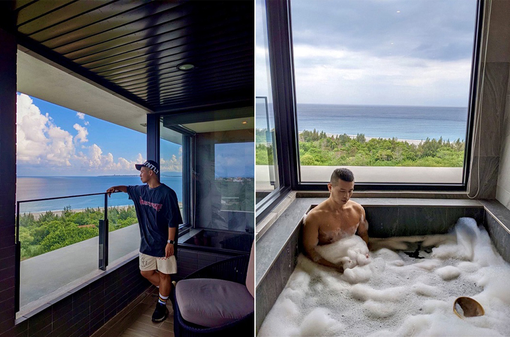
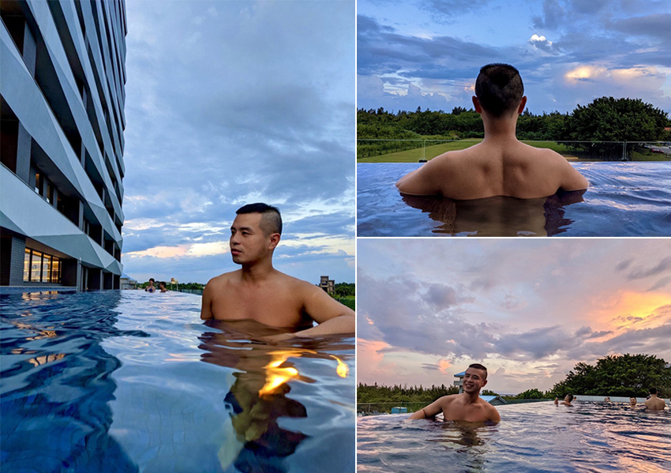
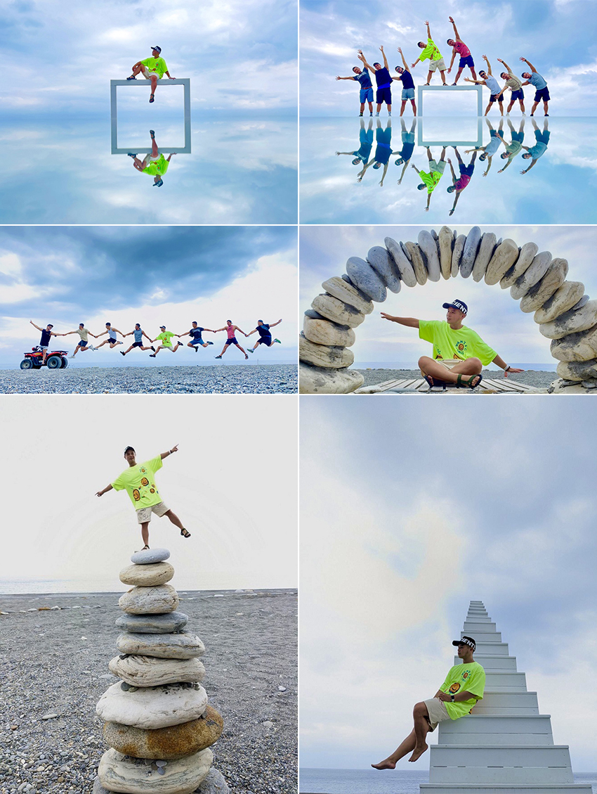
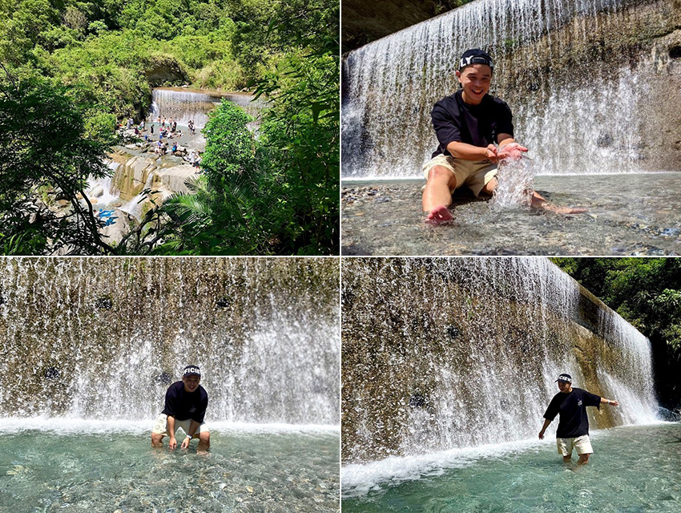

七八月原本應是旅遊興盛的季節，又適逢暑假旺季，許多民眾都會安排出外旅遊， 但由於COVID-19疫情的影響，使得國人旅遊的興致缺缺，直到九月中以後， 因疫情開始慢慢趨緩，再加上政府在某些政策上逐漸解封，許多景點紛紛出現所謂的「報復性旅遊」，尤以東部或外島為國內最夯的旅遊景點。
花蓮，正好是在九月後最多人安排旅遊的景點之一， 剛好聽到花蓮今年又有新的飯店開幕 -「花蓮煙波太魯閣」，於是規劃了三天兩夜的行程，想說很久沒有國內旅遊，趁這機會順便去花蓮開箱入住近期許多網美在IG打卡的新飯店。
|  |
我住的是高樓層的行政豪華海景套房，房間對外的兩面採大片的落地窗，可以躺在床上就可以看到蔚藍的海景，白天一早還有日出的陽光喚醒你，不僅如此，房間外還有一個寬敞的陽台，可以坐著眺望太平洋與藍天，吹著海風，慵懶的發呆，而房間內的浴室四周同樣的採用大片透明玻璃，讓你可以一邊泡澡一邊欣賞太平洋的美景。
對於每位入住飯店的旅客，飯店也準備了一個小驚喜，在打開飯店冰箱時，裡面都會附上一瓶「家興冰果室」的檸檬汁，這可是花蓮新城當地有名的美食之一。當然， 煙波太魯閣天水一色的無邊際泳池也是不容錯過的，也因為這樣， IG上許多網美都很喜歡在這邊拍照打卡，如果要使用他們家的泳池， 要現場排隊， 每個時段是兩個小時， 我個人選擇的是下午5:00~7:00的時段， 所以剛好也能看到接近夕陽時分的天空美景，旁邊還有SPA水療池可以紓壓， 以及躺椅休憩區可以休息， 想多Chill就多Chill。
|  |
除了介紹最新的飯店之外，當然還要介紹花蓮這一兩年很夯的戶外秘境玩法，大家對於花蓮想到可以玩的活動，可能都還停留在賞鯨、泛舟等，這邊我打破大家的刻板印象，要推薦的是可以一邊進行沙灘溯溪享受衝水的快感，一邊還有專業攝影師幫你拍出秘境美照，這個戶外活動就是-「天空之鏡沙灘車」。
花蓮當地有好幾家業者在曼波海灘上經營這樣的戶外活動，我個人是選擇很多外景節目以及網路YouTuber介紹的「2B天空之鏡沙灘車」這家，也是這項活動的創始店家。計費是一台沙灘車1200元含拍照，每台沙灘車可以做兩個人，攤提下來平均一個人600元，一個場次是一個半小時，而且還有專業攝影師隨身拍照，讓大家在開心之餘， 還能留下難忘的回憶，建議邀多一點朋友報名參加，這樣拍起來照片的花樣以及動作就變化越多，全程教練陪同，很安全，而且也不會淋濕衣服，也不太會流汗，讓你在玩完活動後，還是能保持帥氣的姿態。
|  |
有些人可能覺得來到花蓮還是要玩水才過癮，我來介紹一個景點-翡翠谷，從市區騎車過來不算太遠，大約半小時的車程，途中的景色也不輸給慕谷慕魚，重點是它很好抵達，只要穿過一個小小約200公尺的隧道就可以抵達，是個不用到深山就可以到達的消暑秘境。
當你穿過黑黑的隧道後，映入眼簾的就是翡翠谷，它最厲害的就是水濂瀑布，在太陽光的照射之下，波光粼粼，令人讚嘆不已，也因為這樣，有許多網美紛紛來這邊朝聖打卡拍照。這邊的水池不深， 最高的深度大概到腰附近， 很適合一家大小戲水， 有些人也會攜帶毛小孩來玩水。
|  |
介紹到這，你已經是否心動了呢？如果覺得不錯，趁著疫情穩定+0以及天氣還沒變冷的時候，趕緊安排花蓮的行程吧！